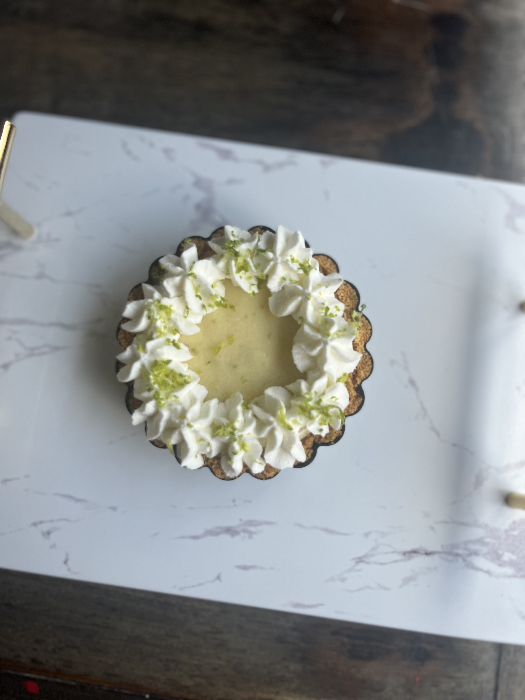
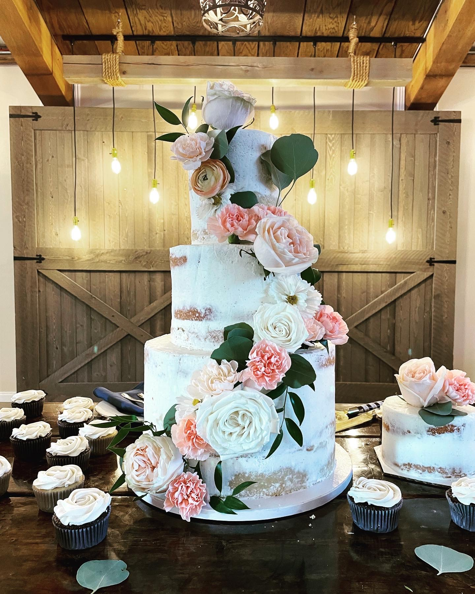
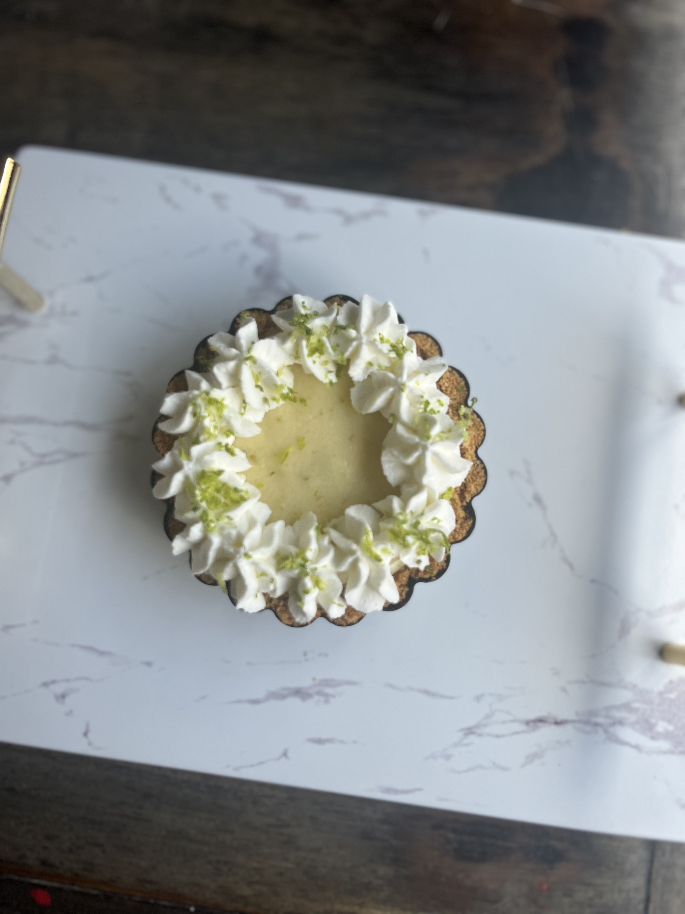
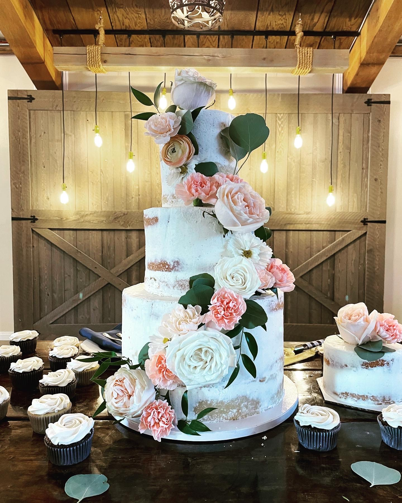

Baking
My favorite hobby


 



Baking unlocks all your senses. Whether it's the smell of brownies
cooling or the feeling of kneading dough, according to psychologist Dr
Linda Blair, “baking appeals to all five of the senses,” which in turn
increases feel-good endorphins.
Read on Britannica